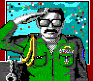

)
and are also summarized below:
)
and are also summarized below:
- File Swapping
- Night Terror
- Tips (added local link to Jon "Merlin" Malan's tips)
Wasteland Commentary:
armorPlatform: All Original commentary by M. P. Owen (April 27, 2000). Corrections by M. Nassar (December 20, 2000, Snake Squeezins post 2287), J. Frappier (November 30, 2001), M. P. Owen (updated June 16, 2002) Here is the armor-class table for armor that can be found in the Wasteland: Leather Jacket: 1
Robe: 1
Bulletproof Shirt: 2
Kevlar Vest: 4
Rad Suit: 5 (includes protection from radiation)
Kevlar Suit: 6
Pseudo-Chitin Armor: 10
Power Armor: 14
NAME AC ("super-loot bag" cheat item): 26
AT Weapon skill
Platform: All See howitzer use.
Base Cochise
Platform: All Commentary by S. Hunter (April 2, 1998)
Speaking to the Junk Master does not reveal the location of Base Cochise. Only completing the Sewers under Vegas will. Commentary by L. Leung (March 20, 2003)
Are you aware of the trick that allows a Wasteland player to "resurrect" Base Cochise after it's been destroyed? After your party blows up the place, if you enter the helicopter in the Guardian Citadel and fly it to Base Cochise, you will arrive at the base. The self-destruct timer will still countdown, but the base will never blow up. You'll still have encounters, and can even pick up Vax if you haven't already done so. Commentary by Michael (April 25, 2003, Snake Squeezins post 4209)
If you speak to the Cochise computer he says this: Question: Mission
My mission? To repopulate the earth with pure stock once my minions have destroyed all other life. I will win. Question: Finster
Finster was a fool. He thought he could rebel, but he was easy to break. If not for me, he would have killed you. c.f. glitches.
brawling
Commentary by L. Stegner (November 7, 1999)
The ultimate tool for [raising your fighting skills] is Brother Goliath. To raise Fisticuffs or Brawling you need AC 10 at least. Always use the least dangerous weapon you can, (i.e., a Book for Brawling, etc.) He can raise your guys up to level 7 in most fighting skills. He can't move, so stand back and plink at him. Be careful not to kill him he is too good a resource.
Climb skill and cheat
Platform: all (with macros) Commentary by B. French (January 19, 1998), update by Kid Kibbitz (June 12, 1998)
I know a way to get your characters a lot of experience quickly in Wasteland. I don't know if this is common knowledge or not, but here goes. What you need to do is make sure all your PC's have the climb ability. Then, hire an NPC that does NOT have the climb ability. Take your party to the casino in Vegas that's NOT Fat Freddy's. There should be a trap door set in the floor behind a counter. Go down it, and you'll be inside a basement that's pretty trashed. Along the north wall, there is some rubble. Move your party over the rubble until they hit the wall, then keep moving. Put something over the arrow key and go get a Coke or something. What should happen is that your party continually climbs the rubble, gaining XP as they go. The NPC is the one holding them back, so they never actually make it over the rubble. I got all my characters to Supreme Jerk this way. Needless to say, the rest of the game was pretty easy :) Note: This trick also works at the Railroad Clans map, but it MUCH slower. Just climb the sandhills over and over and over..... Commentary by V. Caine (September 22, 1998)
The climb skill and cheat is beneath through the east door next to the bar in Spade's Casino. Go through the first north door and use a rope on the hole, then climb skill to get down. As a sidenote one of the Card Sharks in the NW of the casino has a nice laser pistol you can get for minimal effort. Commentary by C. Vickers (October 5, 1998)
Also, in Needles there are several sand hills. If your characters keep trying to climb them their climb and acrobat skills BOTH go up until they get to 3. Also, on top of Base Cochise, you can climb around on the outside walls to get climb of 8 or 9!
Cryptology skill
Platform: All Commentary by Ranger Ben
Contrary to what Jon Malan's tips say about "cryptography" [sic.], I found another use for the Cryptology skill. In the end game, final board with the keys in the corners of the room, the south wall has a spot on it. One of my characters, Jodri Deahgge, noticed this spot with his Cryptology skill, and increased his skill level from 1 to 2. He also deciphered the code on the wall. c.f. Jordi Daehgge.
Darwin Village's Black Market
Commentary by A. J. Pirchl
Finally, we now know the password for the Black Market in Darwin Village! It's "CRETIAN", not "CRETIN" as the Wasteland Survival Guide (Clue Book) says. Commentary by W. J. Brixius (September 24, 1998)
The password for the black market in Darwin Village (CRETIAN) can be gotten from the bartender. He also gives you the password for the lower level of Darwin Base (PROTEUS). (Paragraph 32)
Demolitions skill
Platform: All See howitzer use.
disk swapping cheat
Platform: Commodore 64, Apple //e
For IBM-PC platform, see file swapping. Commentary by T. Maki (April 22, 1996)
For anyone else who plays on a Commodore 64 here is a cheat which may work on the Apple platform as well. Try this anywhere in the game you want extra equipment, say the Sleeper Base weapons area. (1) Before start to play Wasteland make an extra set of disks and keep them unused.
(2) Before you go into a new location (Example from above... going from level 1 to level 2 at Sleeper base) swap your used disk for the unused disk of the same number. Then select "y" to enter the new location and get whatever you need. *** Do Not Leave This New Area & Do Not Save In This Area Yet ***
(3) ONLY RETURN TO THE AREA YOU ORIGINALY CAME FROM. Before you leave the area and return to the area you came from (Level 1 from above.. Enter a New Location "y/n") replace the unused disk currently in your drive with your original used disk. (This way nothing has been altered on the "Unused Disk") You can go into the same area as many times as you want and get equipment over and over again.... (Very helpful when you find good weapons or armour.)
Commentary by E. Tan (June 24, 1996)
The swap disk cheat works on the Apple //. I should know. . . . I finished the game on my old //e! Commentary by Clem the Hick (October 24, 1996)
With disk swapping cheat on the Commodore 64, you can win the game repeatedly, though the second time through and on, you won't get the huge bonus from Ranger Center at the end. Commentary W. J. Altman (November 13, 1996):
To duplicate your items (and equip your group of seven with power armour and proton axes) you can use this simple trick if you are running the game off an Apple //e. Note you will need excessive cash for this. Enter a store. Sell the stuff you want to copy. Leave. Reenter the store. Replace the current game disk with a blank one. Buy your stuff and leave. When leaving it will give some error and ask ou to check the disk. Replace the game disk. When you go back into the store it will be as though you never bought anything. This is real handy for the people who happen to run out of ammo while running through the sewers and drain the stores dry (like myself the first time). Commentary by Jimmy (December 29, 1999)
I played wasteland for the first time on a C-64. With this program you only had the floppy disks. I found that if you had two sets of the disks, and one extra set of disk one, you could copy your players from one disk to another. The same process can be done by copying the total program onto three disks. The first disk should have a copy of your characters, simply enter the Ranger Center, then when you leave place the new unplayed copy into the drive. Now your players should be able to start the game over again. I have used this process to obtain several proton axes, and also to gain large amounts of experience points.
duplicating equipment
Platform: Commodore 64 Commentary by Cliff (October 18, 1997)
When I played Wasteland on my C64 (back in 88-89), I used a cheating method which could duplicate any armor an unlimited number of times. I forgot how to do it though and was wondering if anyone else had discovered the cheat. Commentary by J. Dunlap (September 26, 1998)
The way to duplicate items on the C64 is this:
- Make a backup of the data disk that contains the item(s) that you want.
- (optional) Go in and kill everything in the place, but DO NOT TAKE ANYTHING!!
- Exit with the backup disk in the drive.
- Reenter and grab all the stuff.
- Exit with your other data disk in the drive. (Not the backup).
- Anytime you enter, use the backup and the items will still be there. When you exit, use your data disk.
Easter eggs
Platform: IBM-PC Commentary by Kip (February 16, 2002)
Go to south Needles and to the building that has the accordian player in it (as well as a snake squeezins seller and 2 hobos). Now stand out in front of the building's north side and enter the middle door. Then go to the southwest corner of that room (middle one) and walk down a bunch until you get the Wasteland credits. You may have to walk into the wall up to 4 times as there are 4 cycling messages.
Energy Weapons skill
Platform: All The Energy Weapon skill is a must for winning Wasteland. Here are the locations of the libraries where you can pick up this skill:
- Vegas
- Sleeper Base
- Temple of the Mushroom Cloud
In my experience, an Energy Weapon skill level above 8 seems detrimental. My characters seemed to be less accurate, and to inflict less damage when using an Energy Weapon skill of above 10 or so. Commentary by Black Raven (January 16, 1997)
With the neg-skill cheat, your Energy Weapon skill does not go bad after the 10th level. In fact, your accuracy rate improves dramatically. This is also true with Assault Rifle, AT Weapon, etc.
equipment tips
Platform: All Commentary by Zoster (July 1, 1999)
Another trick to get 4 or more Rad Suits in about 5 minutes is to get Christina and take hers and her geiger counter. then buy 4 tnt and go to the south-west part of needles and go into the waste pit. Go down and straight across from the steps. The first door should crumble. The next one needs to be blown up. Go down the stairs and blow open the next 2 doors, and kill the pit dweller. Go to the south-western door and blow it open. You'll find about 1 or 2 NATO's and 2 or more rad suits... Next get 1 TNT and go to Las Vegas. Go find the mushroom cult and go in. Use the passwords and go up. Blow open the eastern door right before entering the reactor room. There should be 2 rad suits. There ya go.
Faran Brygo's computer
Platform: Apple //, Commodore, IBM-PC Commentary gleaned from Snake Squeezins posts from September, 2002
Faran Brygo's computer apparently caters to your operating system, or at least two of them! On the original Apple // version of the game, lo and behold, his computer is an Apple //e. In the Commodore port, it's also an Apple //e.
"Which is totally wrong, and made me really upset." -- Ranger J. Compton, Snake Squeezins.But here's a possible explanation offered at Squeezins:
Well, it kinda makes sense seeing as how the C=64 version was based on the Apple // version (the original) and the PC version was built from the ground up. -- Ranger L. MazzeiOn the IBM-PC version, his computer is IBM AT.
file swapping cheat
Platform: IBM-PC Commentary by Private 1st Class K. Ballou (May 14, 1998)
You can use a variation of the disk swapping cheat technique from the C64 or Apple on the IBM by making a backup copy of the two files GAME1 and GAME2. GAME1 contains the maps for the outside map, and the first few areas, such as Highpool, Ag Center, etc. GAME2 contains the other maps. What I did many many times was to do a map like Vegas, get as much as possible from it, then leave there and go to the desert map. I'd save the game and then quit. In DOS, I'd copy my GAME2 backup onto the GAME2 file used by the game. All of the GAME2 maps would then be reset, but not the characters or the GAME1 maps. The party info is stored in whichever map they are in; i.e. if you are in a GAME2 location and save over GAME2 your party will be replaced by Thrasher, Angela Deth, etc. Commentary by C. De Souza (May 15, 2001)
There is a cheat (sort of) to get unlimited power cells for the Sonic Cannon and Ion Beamer (I can't get the names correct). Its somewhere in the Citadel (where brother Goliath and other brothers gather), in one of the rooms. What I did last time when my save games are in diskettes, is:
- Make a copy of the map file to another diskette.
- Get all power cells,
- Save the game
- Re-copy the map file to overwrite the existing.
- Reload the save game and woila !! The cells shows up again.
Actually it is unnecessary to quit the game (see May 14, 1998 commentary, above) in order to "reset" any area of the game you like (in the PC version). The game automatically saves an area (or a shop) when you exit. You have to leave the area or shop that you want to reset, but you don't need to leave the game itself to do it. You need at least two copies of the game, so keep them in separate directories or disks. Here's how it works:
- Do what you wish in an area, and exit it in the state you wish to re-use.
- Alt-tab out of the game and make a backup copy of the GAME1 and GAME2 files (one of them may do, but both of them will definitely work) in this state.
- Return to the game, re-enter the area and loot it, then exit the area again. Alt-tab again, and copy over both files if you like, with the backups you made.
- Repeat steps 1-3 as necessary.
Forgery skill
Source: E. Mascardo
Platform: All Forgery can get you past the Webs of Deceit in the VR Maze (right after the "pool room"). Much more reliable than using IQ.
F.A.Q.
Source: C. Baer and S. Sedmak
Platform: Apple // Many years ago, there was a Wasteland web-site named "Ranger Center". It was run by Chris Baer. He hosted a Frequently Asked Questions file and a small website devoted to the Apple // version of the game. When he closed his website in November 2003, Chris asked if I would host the FAQ. I am happy to do so here. In addition, Chris gave me his Ranger Center files in the hopes that I could also host his entire site. Sadly I never put them up. I am happy to finally do this, however. So as of April 30, AD 2008, I am proud to host the classic Ranger Center!
Gambling skill
Platform: All Commentary by D. Sinner (May 4, 1998)
Gambling is actually an extremly useful skill. It can help you level very fast and give you an infinite supply of cash. See to it that all your chars have decent luck and spend 1 of those valuable skill points on luck. When you have enough money and can get into Vegas without dying, go to the nomads camp and play at the slot machine. Play until one of your characters have a gambling skill around 9-10, using a macro of course (remember to level once in a while, you can't have a higher skill than your current level), and a luck around 17-18. Then go to Vegas and play some 3 card monty. Preferably make a macro for it. Let the macro go on for some 15 minutes, in some way locking the macro key. Now you should have around $50000 profit and and some 10 levels (of course this depends on which level you was on when you started) waiting for ya!!! I think that you get one xp for every $ you make! Repeat with all your chars and you'll get cash for the rest of the game and an edge in the levels. You could of course let the macro run while you sleep or something, but that would be a bit to much cheating, eh? ;)
glitches
Platform: Various Commentary by S. Brier (September 12, 2001, Snake Squeezins post 2660)
Anybody ever have any interesting glitches in their original games? I remember the first time I ever played, as the game was loading I got to see Base Cochise blow up. And when I started that first game it actually started me out next to the blown-up Cochise -- with the start-up party. c.f. tombstones near Base Cochise. Commentary by Wild Bill (September 13, 2001, Snake Squeezins post 2661)
Seem to have "shared a glitch experience" with another - entering Finster's Mind Maze and getting "trapped" in a room without doors, that appeared to be on the ground floor. This appeared to be a glitch to me, but perhaps was some sort of "trap" in the game! Also mentioned three other possible glitches, but noted that these occurred after getting two "super loot" bags in the same game, so possibly they're not real Game Glitches! Just to repeat them, they were: 1) When exiting Fat Freddie's hideout/casino, ended up inside Base Cochise with no way out. No Secpass B key OR any ropes hanging from the ceiling! 2) When entering Fat Freddie's office (for the first time) the "normal message routine" was not there and was trapped in his office with no way out! 3) Approached the door at the Acapulco Club, but the "Do you wish to exit the club" message was not there. Again trapped inside a location with no way out! Again - wasn't sure if these were glitches OR just traps for Super Loot bags greediness! c.f. Super Loot bags.
Highpool cave
Platform: All? Commentary by P. Jorner (June 25, 2005, Snake Squeezins post 7048) I saw in the archive that you can use a Match in the Highpool cave, however what wasn't mentioned is that this changes the Rabid Dog into a Spiked Mut. I was delighted to see this as it takes one more name off the list of monsters that are in the engine but haven't been encountered yet. Commentary by P. Jorner (June 29, 2005, Snake Squeezins post 7086)
By the entrance there are 3-4 squares that give the message "it's dark down in the cave" or something. You have to use [a match] there before passing the first heap o' rubble. You'll know it works if you discover a frayed rope.
hints
See tips.
howizter use
Platform: All Commentary by J. Hausherr (November 9, 1998)
If you are in need of some skill levels in either AT Weapon or Demolitions just collect some Howitzer shells and fire away. I gained skill levels several times at the second or third shot with the howitzer.
keys
Platform: IBM-PC Locations of the keys (Blackstar, etc.) in the Guardian Citadel.
- one is in the display cases
- another is in the statue in the long room in the southeast part of the inner sanctum
- another is on the brother/priest hiding in the northwest part
- another is on the first brother you get to kill in the front gate
I am wondering if there are different versions of Wasteland (on the IBM-PC). One reason is because of several differences that I noticed between the game I played and the ones people have been writing about. For one, I never found a sonic key in the Golf course in Vegas. c.f. tips by Sergeant Major Jarrod.
maps
Platform: IBM-PC Here at the HQ-Grid are some full maps of some of the locations of the Wasteland. Visit maps of the Wasteland game provided by Ranger A. Pirchl . And now, for some miscellaneous commentary about the maps of the Wasteland. Commentary by S. Hunter (April 2, 1998)
Never reset a map unless you are on the main map. I once saved in Base Cochise on level 2 and when I reset I found myself on level 3 with the doors shut behind me. I lost that set of characters since the only way out was to defeat the base but I had no plasma coupler.
negative skill point cheat ("super skills")
Source: M. Zier
Platform: C-64, DOS Hole #2: super skills. If you've ever gone to a library, when your skill is high enough, it shows a 255 to increase it, now i'm not sure if you have to gamble first, but when you select it, it will add a skill point, and add a stat point (give you a point i the ability and your reserve skill points). You can increase it up to your level, so you need experience. One way to do this is to gamble,. Once you get your skill to 8, use this trick (note, you must go into the library with at least one skill point to start out with), and increase your Gambling skill. Now make a macro, usually some thing like this: Y-SPACE BAR-1-1-SPACE BAR This will (in Fat Freddy's): Yes for playing, select player 1 to get the loot, which is item one. The best thing is, you get experience points for winning, and (oh yeah, the name ac sells for 32,000 cash) you won't lose at a gamble skill that high. What you do is get a piece of tape, tape down the macro key, and do something else for an hour or so. When you get back, you'll have some levels waiting for you, as well as a surpluss of cash. Commentary by Clem the Hick
I saw you guys had the negative skill point cheat (I never knew how it worked, though), and thought I'd add that I had figured it out previously on my C-64, and I noticed that some of my characters got 68-71 skill points the first time they'd raise a skill to level eight. It didn't always work, but seemed to work best when the chars. were at a certain level (though I don't remember what it was--that was six years ago!) Commentary by Force Commander S. Hunter (April 24, 1998) When using the negative skill trick, skills from the higher IQ groups like Energy Weapon require only level 6 for the bug to work.
Night Terror in Finster's Head
You probably know that the Nightmare [Night Terror] in Finster's Head is one of the toughest creatures to defeat. However, you may not know that it gives you the most experience if you do kill it, and of course twice that if you beat it with melee weapons. Here is some commentary about that.... Commentary by C. Vickers (October 5, 1998)
If you have a proton ax when you jack into Finsters Head and lots of brawling skill you can kill the nightmare in just under an hour. You get TONS of experience. Also, if you have a disk editor you can fiddle with NPC character attrbutes/skills/possessions/etc (this includes CLONE npcs!) and then have them join the party. With brawling skill:255, str:255 and dex:255 you can kill the nightmare with a proton axe (or a canteen or a crowbar or anything you can get readied as a weapon) in one or two rounds. Commentary by T. Bowen (July 27, 2003)
About the Night Terror, it is not only possible to kill the Night Terror, it is possible to get your whole party into Finster's Brain, which dramatically cuts down on the time it takes to kill the Night Terror, not to mention complete the other tasks. Do this:
- Duplicate Finster's Brain 6 times using the alternative-realities method (backup your gamestate files before you take the brain, exit the area, restore the files, re-enter the area, take the brain again, repeat).
- Enter the Brain one person at a time; everyone must have cyborg tech and a Finster's Brain. I.E. disband one character and enter the brain; view the other part of the party, disband one more and enter the brain; view, disband, enter the brain until everyone is there!
Non-Player Characters (NPCs) A. J. Pirchl, already famous for his maps here at the HQ-Grid, has compiled The Complete Wasteland NPC List, Version 1.0. To that, I have added some pictures to go along with them.
onyx ring
Platform: IBM-PC
Commentary by Doomster (November 24, 1997)
I cannot get an Onyx ring in the Guardian citadel. I saved the game just before getting the loot in the monks' bed and every time, I never get the Onyx ring. Commentary by Ranger Ben (February 5, 1999)
See the February 5, 1999 commentary on Ugly John's stronghold for a clue for help with not finding an onyx ring.
operating system compatibility issues
Platform: IBM-PC under Windows Millenium Edition How do you get Wasteland to run under Windows Millenium Edition? Here is some help from your fellow Rangers. Commentary by Ranger M. Nassar (April 5, 2001, Snake Squeezins post 2381)
Oh yeah, easy....
- get win98se boot disk from friend
- boot up machine
- run fdisk
- remove winME partition
- create new partition to install your old win98se on
- install game and play
You need DOS mode in Win ME. Check these sites on how to make DOS mode in ME:
- http://mvps.org/dts/WinME_DOS/Win-ME.htm (link corrected from original post)
- http://www.geocities.com/mfd4life_2000/
Both FoD and WL run fine under Windows 2000 Professional RC2. Just don't try to switch to another application. More commentary by D. Bremner (June 10, 2001, fod post 48)
Under Windows 2000, WL runs fine. It would hang the computer under Beta 3, but I guess they fixed that. Commentary by KillJoy (June 11, 2001, fod post 49)
Running [Windows 2000] here as a matter of fact.... [Wasteland] runs fine, no problems whatsoever.
Paragraph Book entries
Source: The Wasteland Paragraph Book, transcribed by J. Kesinger The Wasteland game came with a book of paragraphs which one is instructed to read from at various times during the game. (Don't read it start to end!) J. Kesinger's now defunct "Rubblefanger!" page was one of the original Wasteland web sites along with C. Baer's Ranger Center. The main page is no longer there (http://www.math.ttu.edu/~kesinger/wasteland/wstpara.html) but I saved a local copy of the main page.
Perception skill Commentary by C. Vickers (October 5, 1998)
In Vegas, at Spade's Casino, there is a loose board you can step over if you make a Perception check. Save the game and stand on the loose board and just wait (press Esc.) over and over. This will increase your silent move AND Perception. Commentary by G. Cunningham (November 29, 2001)
Make sure all characters have Perception and go to the glass wall on the back way into the Hideout in Quartz. Create a macro to move your party the full length of the glass wall several times (the macros only support a limited amount of commands). Now, hit the macro button like 30 times (the command buffer only hold so many commands) and watch your perception levels fly up and each character gains xp for each perception roll, failed or passed. After a little bit, Radio on in and watch the levels fly. While I don't recommend this to anyone who wants to really experience the game, this does make the Citadel much easier.
Picklock skill See Ugly John's stronghold.
printing character statistics
Source: Wasteland Command Summary
Platform: IBM-PC If you've ever wanted to print your Ranger statuses straight from the game to your printer, just hit the "p" key on your keyboard while in the game and your roster is displayed. Out from your printer will spew all your Rangers' vital stats, including skills, attributes, weapons and rank. Once you've won the game, print out your stats, and send them to Ranger-HQ where they'll be posted for all the cyber-world to see!
promotions, free
Platform: all Here are some miscellaneous comments about getting fast and free promotions, sent in by dedicated and efficient Rangers in the field. Commentary by B. Spangler (August, 1996)
The exact location of the free promotions spot: Starting at the NE corner of the Darwin Base, 1 pace N, 1 pace E, 2 paces N, 2 paces E, 10 paces N, and 8 paces W. This will position your party in the middle of a hot spot on the map. Now, just shove a pencil in ESC key, to make time pass quickly, and check back in about an hour for your free promotion. The free promotions coupled with the super skills make an indestructable party. Commentary by Private 1st Class K. Ballou (May 14, 1998)
The night terror in Finster's mind maze is definitely killable. I equip my guy with a proton axe, send him into the maze, and make a macro for one round with the beast. Then I tape down the key and come back in half an hour. It takes forever, but with power armor the character will not be hurt at all, and when you kill him you get 64,000 exp. Then you leave darwin, reset the GAME2 file [see file swapping cheat], and do it again! I got many many many many levels on all of my characters by doing this endlessly. 64000 will give each char several promotions the first time, but it gets to a point where you only get one promotion per 64000 exp. Commentary by S. Hunter (April 2, 1998)
The best way to gain experience is to arm all characters with a proton ax or similar weapon and stand in Base Cochise on the ground level between the ladder and the door which requires a secpass b to enter. All random encounters will appear at distance 10. A few hours of fighting these random encounters should get characters from cadet to captain or more. Commentary by J. Walter (June 10, 1998)
If you run up and down the glass window at Ugly's hideout, you get unlimited promotions. [editor's note: see also Ugly John's Stronghold Commentary by R. Clayton (March 12, 1999)
Yes, this does work- at least, with the IBM-PC version. I don't know about the Apple version. This is probably the easiest, most acessible way to gain fast levels- just set a macro to walk a square north, then a square south. Repeat as necessary. As to whether or not this is cheating- well, that's up to you. I don't use it- there are more entertaining ways to gain levels. :) Commentary by Malakorr (March 8, 1999)
In Spade's Casino... when you encounter the squeaky board upstairs. Save your game, put the character with the Silent Move skill in the lead and create a macro to just walk back and forth over it. You'll need to "babysit" your party for a while... cause it takes a bit to get them up high enough that they won't get caught by the guards in the room to the south. Be sure to have perception for all of your characters tho... I recommend that the macro be as many keystrokes as you have the patience for with S-Y-N at the end of it... once the macro is created just wedge the key down and go do something for a while. Once you think the macro has run long enough just radio in for a LOT of promotions. I managed to get my characters up from Private 1st Class to Supreme Jerk.. took a loooooong time but I did it. I reccomend doing it while you sleep. It's also a good idea to enter Vegas from the top north corner, pick up Covenant and leave to the right side of the map before you do this, he's a good NPC and you can level him up too.By the way, I did this on the IP 10th Anniversary Edition of the game, in DOS. If you do get caught, just exit fight them, exit without saving and start again, your perception only goes up to Lvl 3 tho. Commentary by E. Needhammer (July 2, 1999)
In Quartz, on the "roof" next to Ugly's hideout (Where you use the rope to climb up, and then bust through the glass to the floor below)... if you set up a macro for your party to move up and down IMMEDIATELY next to the glass, you will not only push their perception to 3, but you also gain Experience AFTER their perception's topped off. And this works ANY time. Its a slow level-gainer, but it is a level gainer. Basically, you go to the glass "You see figures moving... ...surprise them", then set up your macro (I started at the top of the "glass" amd worked down, then back up, so that macro looked like "Down (x10), up (x10)"; then hold the key down for a while, and radio. Good for beaucoup promotions early on, and maybe one or two after your crew has advanced higher. c.f. Perception Skill.
promotions (ranks), listing
Researched by: Luthen Iruun, S. Sedmak , M. Stroh , Quinn, B. Spangler, K. Reimer; compiled by Ranger Ben.
Platform: all
|  | Here it is. The COMPLETE listing of Ranger ranks.
We hereby salute each brave Desert Wasteland Ranger for the hard
work, sweat, blood, and courage needed to attain each and every one of these
ranks. You've earned these ranks, Rangers!
Thanks to Ranger K. Reimer who pointed out corrections to this list on
September 11, 2010. (Previously I had been informed by Rangers
throughout the years that there were 183 ranks, but Reimer's research
shows there are only 181. I have corrected this list to match his. See his
decoding of the rank code which includes experience points needed
for each level and formulas.
To see the character sheets of some Wasteland Rangers who've actually
attained some of these ranks, check out the
Wasteland Ranger End Status
page.
P.S. Yes, I know this isn't the exact animation of the saluting
commander, but somewhere along the way someone put an animated gif
together from the various frame captures. I've long since forgotten who
put this together for me. For a more accurate (if not perfect)
rendering, head over to Ranger Reimer's Wasteland Animations page. |
| rank: title | rank: title |
|
1: Private 2: Private First Class 3: Specialist 4: Senior Specialist 5: Corporal 6: Lance Corporal 7: Command Corporal 8: Grenadier 9: Fire Grenadier 10: Grenadier Major 11: Master Grenadier 12: Sergeant 13: Sergeant 14: Technical Sergeant 15: Technical Sergeant 16: Sergeant Major 17: Sergeant Major 18: Master Sergeant 19: Master Sergeant 20: Sergeant Argeant 21: Sergeant Argeant 22: Cadet 23: Cadet 24: Cadet Specialist 25: Cadet Specialist 26: Combat Cadet 27: Combat Cadet 28: Command Cadet 29: Command Cadet 30: Lieutenant 31: Lieutenant 32: Lieutenant 33: 1st Lieutenant 34: 1st Lieutenant 35: 1st Lieutenant 36: Fireteam Lieutenant 37: Fireteam Lieutenant 38: Fireteam Lieutenant 39: 2nd Lieutenant 40: 2nd Lieutenant 41: 2nd Lieutenant 42: Lieutenant Argent 43: Lieutenant Argent 44: Lieutenant Argent 45: Captain 46: Captain 47: Captain 48: Combat Captain 49: Combat Captain 50: Combat Captain 51: Technical Captain 52: Technical Captain 53: Technical Captain 54: Command Captain 55: Command Captain 56: Command Captain 57: Captain Argent 58: Captain Argent 58: Captain Argent 60: Major 61: Major 62: Major 63: Fireteam Major 64: Fireteam Major 65: Fireteam Major 66: Specialist Major 67: Specialist Major 68: Specialist Major 69: Technical Major 70: Technical Major 71: Technical Major 72: Major Argent 73: Major Argent 74: Major Argent 75: Lance Colonel 76: Lance Colonel 77: Lance Colonel 78: Lance Colonel 79: Lieutenant Colonel 80: Lieutenant Colonel 81: Lieutenant Colonel 82: Lieutenant Colonel 83: Fireteam Colonel 84: Fireteam Colonel 85: Fireteam Colonel 86: Fireteam Colonel 87: Division Colonel 88: Division Colonel 89: Division Colonel 90: Division Colonel |
91: Colonel Argent 92: Colonel Argent 93: Colonel Argent 94: Colonel Argent 95: Lance Commander 96: Lance Commander 97: Lance Commander 98: Lance Commander 99: Lieutenant Commander 100: Lieutenant Commander 101: Lieutenant Commander 102: Lieutenant Commander 103: Commander 104: Commander 105: Commander 106: Commander 107: Technical Commander 108: Technical Commander 109: Technical Commander 110: Technical Commander 111: Force Commander 112: Force Commander 113: Force Commander 114: Force Commander 115: Brigadier General 116: Brigadier General 117: Brigadier General 118: Brigadier General 119: Lieutenant General 120: Lieutenant General 121: Lieutenant General 122: Lieutenant General 123: Major General 124: Major General 125: Major General 126: Major General 127: Technical General 128: Technical General 129: Technical General 130: Technical General 131: General Argent 132: General Argent 133: General Argent 134: General Argent 135: General Argent 136: General Argent 137: General Argent 138: General Argent 139: General Argent 140: General Argent 141: Imperial Scarscalp 142: General Argent 143: General Argent 144: General Argent 145: General Argent 146: General Argent 147: General Argent 148: General Argent 149: General Argent 150: General Argent 151: 1st Class Fargo 152: General Argent 153: General Argent 154: General Argent 155: General Argent 156: General Argent 157: General Argent 158: General Argent 159: General Argent 160: General Argent 161: Photon Stud 162: General Argent 163: General Argent 164: General Argent 165: General Argent 166: General Argent 167: General Argent 168: General Argent 169: General Argent 170: General Argent 171: Revenant Argent 172: General Argent 173: General Argent 174: General Argent 175: General Argent 176: General Argent 177: General Argent 178: General Argent 179: General Argent 180: General Argent |
ranks
see promotions / rank listing.
Red Ryder
Source: Ranger Ben, Luthen Iruun, W. J. Altman
Platform: all Have you ever killed the Red Ryder himself? If you attack the juvies in HighPool next to the river/lake when they laugh at you for falling in it, the Red Ryder himself comes out with his bb gun. If you kill the Red Ryder and then loot his one measly clip, all of Highpool is destroyed. The dorms are abandoned, the shop closes, you no longer have access to the cheapest doctor in the Wasteland, and the place looks messed up. I always thought of it as destroying the peace of HighPool symbolized by killing the Red Ryder. Weird. c.f. Super Loot bags for information on how to get a hold of an actual Red Ryder BB gun. Question by Ranger Wolf, November 4, 2002
I read a few years ago in the Gaming Tipps corner of a gamers magazine called "ASM", that if you kill the night terror in Finster's mind maze you would get this gun, which should be the absolute best in the game and only using 7.62 ammo. Is there something true about this, or why is it so legendary (you can get it the gun in fallout from a random enounter)?
respite for injured Rangers
Source: D. Torane
Platform: All December 4, 1996 Hey Ranger Ben! It's me again, I noticed that one of my tricks wasn't on your board. Thats very sad, it's one of the most useful there is! It allows you to rest as long as you like without being attacked, great if you are wounded. It's like this-if you have a "dummy character," like the ones you disband forever right after you get them (Jackie) they can be extremely useful to you. Take them somewhere (I found the area just east of Ranger HQ the best. To get there enter, exit and go right.) and leave them there. Then play with your real group and do what you normally do. Then when you get really injured badly (Vegas Sewers) heal them back to UNC and switch back to the "dummy." Then let time pass. As long as they don't die or get UNC'ed then the other group won't be switched back to and they won't be aatcked! I found this really useful. But in base Chocise you need to have all four parties toghter so this would be almost a death sentence to your one, lone character. So add them or ditch them before getting too far inside. Thats all!
resurrection of dead characters
Source: R. Fabrega
Platform: Apple // emulator August 7, 1996
I recently discovered a new "cheat" that works on the apple // emulator version and perhaps others. It only works once, though, and the party must not be carrying any gas masks for the cheat to work. Here it is: If you carry a corpse or two when you chat with Fat Freddy and refuse to accept his job offer, you'll be gassed and taken to the prison northeast of Vegas. At this point, you'll notice that your dead companions have been brought back to life! Then it's only a matter of using dexterity on yourself (several attempts may be necessary) and you'll be able to move freely about the cell. Use picklock on your cellmate and hire him. Covenant will get rid of the block of concrete that obstructs your way out. The resurrected characters usually have a constitution of 1 but occasionally they have 255 constitution. The cheat is probably related to the bug that makes negative skill points possible. I have the img file in case you need it.
Safecrack skill
See Ugly John's stronghold.
Scorpitron
Platform: IBM-PC ACK!
servo motors
Source General observation
Platform: All? Many Ranger parties have noticed that sometimes there just ain't enough servo motors to complete the game. Specifically, it takes quite a few to build the robot Max. Here's where they are, and if you've looked there, and still don't have enough, consider yourself the unlucky recepient of a bug in the game. Sometimes there just ain't enough! Stagecoach Inn:
- One is in Ellen's sister's wheelchair, who is waiting for you in one of the rooms for which Ellen gives you a key. If you kill her, you can get the servo motor.
- Another is in the cabinets in the housekeepers room.
Sewers:
- The rest are scattered throughout the sewers.
Super Loot Bag:
- If anyone finds one in the super loot bag trick (c.f.) then let me know. This would be a good solution to the problem, if there aren't enough elsewhere.
Hi there. I noticed that there's a section in the Wasteland Underground that implies that you need to collect servo motors from all over the game to rebuild Max in the sewers. In my experience, this is not correct. I have played through both the Apple II and IBM PC version several times, and always found enough servo motors in the sewers to finish the section- even if I entered the sewers without any motors in my possession.
Silent Movement skill
Platform: All Commentary by Clem the Hick
The skill silent move helps in a few places in the game. Only one character needs it and I think it only works if that char leads the party. One place it helps is when you sneak up on Louie in the Courthouse. Silent movement won't get Danny killed as often. Commentary by C. Vickers (October 5, 1998)
In Vegas, at Spade's Casino, there is a loose board you can step over if you make a perception check. Save the game and stand on the loos board and just wait (esc) over and over. This will increase your silent move AND perception.
skills listing
Platform: All Commentary by E. Needhammer
"I've compiled a list of all the Wasteland skills and the mandatory IQ req's, along with the coupla notes about where to get 'em." Check out Earl's mini-research project below. I added # marks next to skills that can be acquired in the Guardian Citadel's library.
Min IQ Skill -------------------------- 3 Brawling Climb Clip Pistol Knife Fighting Pugilism Rifle Swim -------------------------- 6 Knife Throwing Perception -------------------------- 9 Assault Rifle AT Weapon SMG -------------------------- 10 Acrobat Gamble Picklock Silent Movement -------------------------- 11 Combat Shooting * Confidence -------------------------- 12 Sleight of Hand -------------------------- 13 Demolition # Forgery -------------------------- 14 Alarm Disarm # Bureaucracy -------------------------- 15 Bomb Disarm # Medic Safecrack -------------------------- 16 Cryptology -------------------------- 17 Metallurgy -------------------------- 19 Helicopter Pilot ** -------------------------- 20 Electronics # Toaster Repair # -------------------------- 21 Doctor -------------------------- 22 Clone Tech *** # -------------------------- 23 Energy Weapons # -------------------------- 24 Cyborg Tech # ========================== * Only available at Ranger Center on Character Creation ** Only available at Sleeper Base, Lv3 *** Only available at Sleeper Base, Lv1 # Also available at Guaridan Citadel Library
Sleeper Base
Source: Wild Bill on Snake Squeezins (April 24, 2003) Hi Rangers, Like some, I either "skipped over some of the fine detail" OR just forgot it - so for the benefit of all, here's the info from the computer at Sleeper Base - Wild Bill SLEEPER BASE - Level 3, - Room in the N.W. corner has a "Computer Terminal" to access Personnel Records or Files for the base's personnel. 1) Smith - # 52 Col. John Smith's personnel file flashes up onto the screen. Aside from a large amount of test scores and other data, an occasional paragraph of interest slides by. One that catches your eye reads, in part, "After the confrontation with Finster concerning the shift of Darwin's focus, Smith requested and got a transfer to the Base 2 operation. He remained acting commander until the project's completion in 1995." 2) Edsel - # 40 Maj. Harrison Edsel's personnel file flashes up onto the screen. Aside from a large amount of test scores and other data, an occasional paragraph of interest slides by. One that catches your eye reads, in part, "The discipline problem with Edsel has resolved itself. Once he learned he would be transferred to Base Cochise to program that computer with his new artificial intelligence routines, he stopped complaining about the primitive rules restricting his creativity on this project.- 3) Cite - # 100 Maj. Peregrine Cite's personnel file flashes up onto the screen. Aside from a large amount of test scores and other data, an occasional paragraph of interest slides by. One that catches your eye reads, in part, "Peregrine accurately assessed the security problems with the storage area. While the base is not meant to be an armed camp, his precautions are well noted and should provide a surprise for unauthorized personnel operating in the base." - (the "electrified" corridor & bots at the end !) 4) Thomas- # 63 Capt. Phil Thomas's personnel file flashes up onto the screen. Aside from a large amount of test scores and other data, an occasional paragraph of interest slides by. One that catches your eye reads, in part, "Thomas, a recent transfer from Project Darwin, has expressed reservations about Finster's experiments. He voiced some of the same objections to them that prompted me to leave Darwin. I don't know if he's on the level, or if this is some trap set by Finster..." 5) Mills - # 70 Capt. Andrea Mills's personnel file flashes up onto the screen. Aside from a large amount of test scores and other data, an occasional paragraph of interest slides by. One that catches your eye reads, in part, 'Despite her having won the Nobel last year, Andrea's relationships with the other project members have not changed. She's still her affable self, and she's made others feel, through their work on the clone pods, they've each earned a piece of that Nobel themselves." - (the Clone Pods work !) 6) Beams - # 91 Dr. Franklin Beams's personnel file flashes up onto the screen. Aside from a large amount of test scores and other data, an occasional paragraph of interest slides by. One that catches your eye reads, in part, "Dr. Beams's assessment of Edsel's obsessive behavior concerning the computer and AI just works as another nail in Edsel's coffin. The faster I can get him out of here, the better. Let Cochise's boss deal with a fully-aware computer." 7) Heller- # 101 Lt. Russel Heller's personnel file flashes up onto the screen. Aside from a large amount of test scores and other data, an occasional paragraph of interest slides by. One that catches your eye reads, in part, "I thought Heller would be a discipline problem, but he's not. His jokes relieve the tension as we work to finish this base. Others worry about the news that Edsel's new computer is helping to finish Cochise all by itself, but Heller shrugs it off. Who wants to work with someone who won't sit down for a cold beer after the work's done anyway?' Perhaps mankind does stand a chance against superior machines."
sounds of Wasteland
Source: Snake Squeezins discussions Here is a listing of the various sounds of Wasteland, as gleaned from users across the world who've posted on the subject to Snake Squeezins. Platform: Apple //
- ?
- beeps
- air raid siren during the beginning sequence
- the Geiger counter is more realistic sounding [than the other platforms]
- the explosions are better [than the other platforms]--they sound like explosions!
- the promotion jingle
- firing on full-auto
- exploding a mine
- the Gieger counter clicking noise
- click upon moving or resting once
- the promotion jingle
- klaxons wailing in the beginning of the game
- the satellite blipping out nuclear spots
Spade's Casino
Commentary by Witness the Fitness! (October 5, 2002)
In Spade's Casino, upstairs in one of the rooms (Left of the toilet), I get a message saying something like "Hmm, that's strange..." or "This looks interesting" when I stepped on one of the floor panels. It only happens once, then never again....
super loot bags
Source: M. Zier
Platform: IBM only Hole #1: super loot bags. You can get these at the ACAPULCO club (that's the password) in needles, or at Fat Freddy's in vegas. Go to a chair, gamble till you win, and leave the cash. Now go to the next open chair (slot machine) and gamble till you win. Don't take the cash yet. Go back to the first cash bag, take it, and drop any item in anyone's inventory. Now go to the second bag, get it, and press the down arrow. When it locks up, just hit escape. You can get all the items in the game, and others. The best two others are Red Ryders, which are 7.62 rifles with 63 shots, and a range from 600-800 damage, and a thing that looks like NAME AC. Select the name ac and if it says unjam?, select no, and equip it. you now have a 127 armor level (only shows 27). If it doesn't, redo the process. Only the Red Ryder will always be a weapon, the other times can shift, and they are not worth getting. Commentary by Michael Cribbs
I know that the cheat works if you do the following at the Acapulco club: disband 1 character (with a Gambling skill), go to the first chair and gamble until you win, leave the money at the chair, go to the next chair and gamble until you win, then leave the money at that chair, then go back to the first chair and take the money, before going to the second chair Drop some item from your inventory(such as 9 MM ammo clip), then when you go to the loot at the second chair the computer freezes, hit the down arrow then escape (you sometimes have to hit escape more than once) and presto you can have as many Red Ryder BB guns or Proton Ax's as you want. Commentary by S. Sedmak (March 14, 1996)
I can't *quite* get the "Super Loot Bag" cheat to work for Wasteland. I've tried it in both Acapulco and Fat Freddy's. Both times I get a loot bag that is empty. When I hit the down arrow and Escape, it does the same exact thing any bag would -- it exits. When I come back nothing has changed. I get the feeling that something is there, and I've almost got it. Any suggestions? I've got an ApplePC image right at this point and am willing to send it to anyone who can solve this mystery. Commentary by Black Raven (January 16, 1997)
Sorry, the super loot bag trick is an IBM-specific bug, it looks like us 64/Apple II users are out of luck. I really wanted those Red Ryders too! Commentary by Ranger Alec (November 11, 1997)
If you push down on the fourth (I think) section of chain fence on the southern border of the hotel in Quartz, it will give you a message about loot being hidden under a chair, you then get a loot bag that contains the same goodie you get in the much more complicated gambling trick! Enjoy! Commentary by Doomster (November 24, 1997)
I am wondering if there are different versions of Wasteland (on the IBM-PC). The reason is because of the following differences that I noticed between the game I played and the ones people have been writing about:
- To use the SuperLootBag, I do not need to "drop" an item from my inventory. All I need to do is to disband a character, look at the char's inventory once, and then go to the loot bag, which will freeze up, and then have many items after I press the ESC key.
- The NAME AC item (armour) only gives me 26, not 27 armor.
i thought about the super loot bag trick and how the computer works. the way i got the super loot bag trick to work is i got the empty loot bag. i pressed the right arrow instead of down and i could cycle through all the stuff that included such things as 5 russian and 3 female. i have an idea why that happens, but i still need to hack in to wasteland to verify my hypothesises. i noticed a lot of people think you have to press down and escape when the computer locks up. that doesn't do much but confuse the computer. just a little note. Commentary by V. Caine (September 22, 1998)
For the Super Loot Bag Trick, you don't have to (well I don't at least =) ). Disband a character or drop an item, I just gamble and win, don't take the cash, play again and win, don't take the cash, go to the original bag and take the cash, then scroll through a characters info screen, go to the second bag and select the character i scrolled through, and press down, viola. I've noticed that the loot bags I got in Freddy's and in the Acapulco Club contained slightly different items, not sure if this is random or what, haven't tested it. Commentary by Shawn (January 1, 1999)
Hi, I have some info on the super loot bags. There was a suggestion earlier about a superloot bag located in the chain link fence at the Stagecoach Inn, but that only works after you get the one in the Acapulco Club, or at least thats what I've discovered. Also in Room #12 (I believe) of the Stagecoach Inn, talk to the hobo in the corner, ask him about MONEY and he'll tell you there's something hidden in the chair. Use a character with good perception skill and use it over the chair (with space bar) and you'll get the superloot bag also. I have a hunch this one might work without going to the Acapulco Club first, because of the hobo's advice. Commentary by Freeman (February 11, 1999)
I think this is the correct way to get a super loot bag in the Stagecoah Inn: First, enter a room full of bums, fend them off and talk to the bum in the corner. Ask him about MONEY. He will tell that some money in hidden under the chair. Go get the money. If you now go walking right next to the eastern end of the southern fence (three or four spaces from the wall I think) you'll get a message about loot hidden under a chair and find a super loot bag. Commentary by V (June 10 1999)
I was foolin' around, and I got the Super Loot Bags...so naturally I grabbed some Red Ryders and some Name AC's. The odd thing is, though, is the NAME AC refused to work as armor, and instead, is a melee weapon. But the thing thats messed up is how the power level fluxuates between battles. In Base Cochise, it did over 980 damage to some VTOL guns, killing them instantly, in Vegas it did only 20 damage to a Slicer Dicer in one fight, and then over 50 in the next. Commentary by WindWalker (December 14, 1999)
I wanted to add my $0.02 about the Super Loot Bag. The way I've gotten it to work is: Bet at one of the chairs in the Accapulco Club until you win.
Don't take the loot.
Bet at one of the other chairs in the Accapulco Club until you win, then take the pooled loot. This creates a glitch in that there's a loot bag with nothing in it.
Setup one party member so that they don't have any items in their inventory. (i.e. Temporarily give everything to other party members.)
Have the party member with no items look in the empty loot bag. There will be nothing there at first. But if you press IJKLM, suddenly the glitch shows itself and you can get the Red Ryder guns (along with 20 Finster's heads, 30 Secpass Bs, etc.) Commentary by A. Knight (July 14, 2002)
Another Super Loot Bag exists that I didn't find on your site. (DOS Version) In the restaurant in Needles (where the roaming musician follows you from table to table) buy some Snake Squeezins from the salesman. Don't pick it up. Step to the East side of the salesman and buy another Snake squeezins. Then go pick up the first SS you purchased and the second one becomes a Super Loot Bag.
Temple of Blood
Commentary by Ranger Wrank (February 17, 1999)
This isn't a cheat, but it's definately cool. In the sea of blood under the chessboard in the blood temple, if you swim out to one of the walls of the big room that surrounds the water, and run into it a couple of times, the game will give you a message.
tips
- tips by Jon "Merlin" Malan (c.f. cryptology skill.)
- tips by Sergeant Major Jarrod
- Developing your Skills (and Using the "tools"), by Wild Bill
- Universal Hint System: Wasteland Hints
tombstones near Base Cochise
Source: J. Webb
Platform: Commodore 64 I am wondering if anyone else has ever encountered this particular bug. It occured on the C64. Twice, as I was resting in the desert map northwest corner, up there next to Base Cochise, I have been attacked and when presented a list of targets, was offered both the Desert Dwellers which attacked me, AND tombstones. The tombstones that mark a dead character's constitution bar, the icons, that is. Anyhow, I Meson Cannoned the tombstones. As the computer was awarding experience points, the bug continued, and some characters were awarded random amounts of experience. The computer even awarded experience to nonsense named characters. For example, the reward scrolling might read 'Ace gains 1000000 experience, 1 gains 2 experience, Killer gains 23563 experience, $#51 gains 32623 experience' et cetera. Not only did the game award these insane experience points, it also glitched and altered character attributes. I had a character come out of this bug with an 88 Strength, a 233 Luck, and a 35764 MAXCON! Anyone else ever found this? Commentary by Black Raven (January 16, 1997)
As far as the tombstones, I checked into it with a 64 and determined that it must have been a bug (a bad copy will do it sometimes). c.f. Base Cochise.
Ugly John's stronghold
Platform: IBM-PC Commentary by Doomster (November 24, 1997)
In Ugly John's stronghold (NE of the Courthouse), I cannot find the safe. I have a character with a Level 4 Perception and after one hour of looking at the map on the wall, the char could not find a safe hidden behind that map. I take it that this "safe" does not exist in the IBM-PC version? Commentary by Christian (September 16, 1998)
I did find out that the Ugly's safe does exist in the PC version, you need to have level 3+ character with level 3+ perception, one way to get it is to go to the secret entrance to Ugly's and walk up and down along the windows above his hideout, you will have everyone in your party gain both experience for each step and have a good chance of raising your perceptions up to 3. You can use this just like the trash in the basement in Vegas for experience/level building, but most PCs will not cycle fast enough to hold down the macro button for moving up and down, only way I know around this is to set the keyboard to 1 cps (clicks per second) in the computer's CMOS setup. Commentary by S. Smith (August 21, 1998)
I couldn't find the safe either, and I remembered it quite clearly. That's why I spent a good amount of time with a 5 in observation [he means perception --Ranger Ben] looking everywhere. When I went back for a third time (after finding this site and reading the walkthroughs to see if I was imagining things), I found it simply by walking along the wall. Go figure. Commentary by Ranger Adam (February 5, 1999)
I think I may have an answer about the problem with Ugly's safe in his hideout. I've been able to both find the safe and not find it while playing the version off of the CD. I think it's the install program that is used to copy all the game files to HD that screws it up (bad copy or something like that). What I've both doing (mostly because I was lazy and didn't want to go thru all the hoops to get the front-end program running) is copy all the files off the CD then paste them to a directory on the HD (if you're using Win95/98). Then after copying them, select all, go to properties and unselect read-only. This should fix the problem. Also I think this fixes the problem with only one Onyx ring. But it's been a little while since I've played the game, though I'm quite positive that procure will fix both problems. Commentary by Freeman (February 11, 1999)
About the safe behind the map in Ugly John's hideout. In the newer version it is still there, but can only be spotted through passive use of perception skill, So just walk back and forth in front of the map. I spotted it when I was playing the game through the second time with same characters. Commentary by J. Compton (January 25, 2000)
Please contribute this to the Ugly John's Stronghold thread in the Wasteland Underground, and the "versions of Wasteland" thread, because the conclusion there is obviously wrong: The safe is always there in Ugly John's hideout. You guys are all so experienced now you probably never create characters with the -Safecrack- skill. Perception will work, but Safecrack works better. I discovered this in a game I just started playing...I knew perfectly well that a safe was there but it didn't show up. Finally, I found it, complete with a Safecrack Level 2 bonus for the character that figured it out. Why would safeCRACK be useful for finding a safe? I don't know, why do broken toasters contain laser guns? Commentary by J. Liao (March 1, 2000)
I've just walked next to the map in the hideout, and it raised my PICKLOCK skill to 6. I had been trying to search for it with perception before, and it hadn't worked, but perhaps it is the picklock skill that counts. Also, the fact that it was able to raise my skill to 6 means that it was sufficiently "difficult" to spot, which explains why most rangers won't find it in the beginning of the game, when they probably have a picklock skill of 1. I have the version without the Onyx Ring in the Citadel (either that, or it's really well hidden), so the theory that it was excluded in later versions may not be quite true after all. c.f. versions of Wasteland. Commentary by A. Knight (July 14, 2002)
I have found the safe before and had my Bureaucracy increase as a result.
unlimited health
Platform: IBM Commentary by Mike (January 16, 1997)
Get plenty of money (enough to cure rad. poisoning for all your guys). Disband all but one party member into a radiation area (catch radiation poisoning). The area around darwin village is good. Now add them back to the one guy (that isn't poisoned). Have the poisoned members drop their canteens and armor; walk around the desert until they are in serious or worse condition. (Make sure your one unpoisoned guy is good at medic or doctor; if you don't have one, it's easy to scoot into Vegas and get Mike Scott or Convenant). Now when these guys are hurting enough, save the game (trust me). Now exit and use the master disks to reset the maps (make sure the characters are saved!). Now when you start the game again, bring them back up to UNC using the medic or doctor skills. Walk over to Highpool, and have them cured. When your guys wake up, the number in the CON column should be much higher than the MAX. Now they have almost infinite CON points, and can take a real beating. *Note* this life will run out, but it shouldn't for a few thousand or so points (enough to let you storm guardian citadel with a club). When your life reaches zero; it will reset and go back to 999. There you go. I think that's how it worked, but as I said, I don't have a computer to test it out on, but it should be o.k. Let me know how it works out; feel free to edit my directions. Just want to spread the knowledge.
versions of Wasteland
Source: various
Platform: all This section of the Underground is dedicated to listing various discrepancies between versions of the Wasteland game, either from cross-platform comparisons (Apple //, Commodore 64, IBM-PC) or intra-platform (IBM-PC, with and/or without original setup files, and as released and re-released ad nasueum). ⇒ c.f. Ugly John's stronghold (IBM-PC variations). ⇒ c.f. Faran Brygo's computer (differences between Apple //, Commodore 64, IBM-PC). Commentary by Doomster (January 1, 1998) Someone else tried the Wasteland version that was on the Interplay CD. He too couldn't find the safe in Ugly John's hideout. He remembers that on an older PC version, he could. It looks like there are two versions of the PC Wasteland out there. One is the one that has a safe behind the picture in Ugly John's hideout and has two Onyx rings in the game (one of them being in the Guardian Citadel). The other (latter version, the one I have) has no safe behind the picture and has no Onyx ring in the Guardian Citadel. Can anyone think of any more? Commentary by J. Compton (January 25, 2000)
Please contribute this to the Ugly John's Stronghold thread in the Wasteland Underground, and the "versions of Wasteland" thread, because the conclusion there is obviously wrong: The safe is always there in Ugly John's hideout. You guys are all so experienced now you probably never create characters with the -Safecrack- skill. Perception will work, but Safecrack works better. I discovered this in a game I just started playing...I knew perfectly well that a safe was there but it didn't show up. Finally, I found it, complete with a Safecrack Level 2 bonus for the character that figured it out. Why would safeCRACK be useful for finding a safe? I don't know, why do broken toasters contain laser guns?
walkthroughs
- Ben Morgan
- Jc 2
- The Pretty Good Wasteland Guide, Version 1.1 by Per Jorner. Actually, it's excellent, not just pretty good!
- John Strohm's Top 20 is no more. If anyone has a copy of this please e-mail it to me!
- Wild Bill's walkthrough (Microsoft Word Document)
weapon tips Commentary by Desert Ranger Vince of the 56th "Anti-Mutie" squad (October 2, 1998)
Using my cheapness and diabolacle mind, i figured out a way to get the 1989 NATO assault rifles while i was still a Private! Haha! Get this... Go sell off all of your stuff besides your canteen and a few 45 clips. Go truckin' down to the Junkmaster Village and use the password, REDHAWK. Hit the ammo-shed first, and try to crack open the chest w/out being poisoned. Get the MAC-17 and kill off the gaurds outside (tip: use full-auto), taking their UZI and giving it to another Ranger, and then break into their armory (the one above) and taking the two M1989A1's from the gun shed. Equip those and fight your way out of the village (killing women and children was never so fun while you're packing assault-rifle vengeance) using the UZI, MAC-17, and the two NATO's. You should pick up a few more rifles from the loot of the Scavs while you leave Junkmaster's Village. There...you just got two SMG's, a couple of the BEST ASSAULT-RIFLES IN THE GAME, and there should be some grenades and spears too (spears: the low-cost alternative to a LAW Rocket), while you're still a PRIVATE. I bet you feel good, eh? Commentary by Desert Ranger Vince of the 56th "Anti-Mutie" squad (October 3, 1998)
A low-cost alternative for RPG-7s and LAW Rockets to storm the Citadel is Covenant and several spears. I found this out when i heard Spears were a good Anti-Tank weapon and especially destructive when used with a strong character w/ high dexterity, a.k.a. Covenant (DEX:20, STR:20,AT Skill:3). While my other characters were fumbling and wasting valuable rockets, Covenant wasted Brother Goliath and Sister Jade with only one hit each. Covenant also managed to land a few hits on the Scorpitron with a spear. So, if you're low on cash and need something destructive....go get Covenant and a spear!
weapon skill tips Commentary by Zoster (July 1, 1999)
I do have a trick for you to use if you wish. It helps to get any weapons skill up to 7 (mainly assult rifle and Energy Weapons). Arm your party with NATO's or AK's and kevlar or better. Go to the Scorpitron (hopefully not defeated) and auto it. You should do none-to-minimal damage and increase in skill quickly. The Energy Weapons one works well in the citadel, as does the assult rifles [one]. Go through the game a few times and see your party with 10 Assult Rifle and 10 Energy Weapon.
- Front Desk
- Comm Center
- ⇒ Underground
- Reading Room
- File Room
- End Status
- Rec Center
- Site Graphics
- Links
⇒ Brawling skill ⇒ Climb skill and cheat
⇒ Cryptology skill
⇒ Darwin Village's Black Market
⇒ differences between operating systems (see versions of Wasteland
⇒ disk swapping cheat
⇒ duplicating equipment
⇒ Easter eggs
⇒ Energy Weapon skill
⇒ equipment tips
⇒ Faran Brygo's computer
⇒ file swapping cheat
⇒ forgery
⇒ free promotions (see promotions, free)
⇒ Wasteland FAQ
⇒ Gambling skill
⇒ glitches ⇒ Highpool cave
⇒ hints (see tips)
⇒ howitzer use ⇒ keys ⇒ maps of the Wasteland ⇒ negative skill point cheat
⇒ Night Terror in Finster's Head
⇒ NPCs ⇒ onyx ring
⇒ operating system compatibility
⇒ operating system differences (see versions of Wasteland ⇒ Wasteland paragraph book
⇒ Perception skill
⇒ printing character statistics
⇒ promotions, free
⇒ promotions, listing
⇒ ranks (see promitions, listing)
⇒ The Red Ryder
⇒ respite for wounded Rangers
⇒ resurrecting dead characters ⇒ Scorpitron
⇒ servo motors
⇒ Silent Movement skill
⇒ skills listing
⇒ Sleeper Base
⇒ sounds of Wasteland
⇒ Spade's Casino
⇒ super loot bags
⇒ Temple of Blood
⇒ tips
⇒ tombstones near Base Cochise ⇒ Ugly John's Stronghold
⇒ unlimited health ⇒ versions of Wasteland ⇒ walkthroughs
⇒ weapon tips
⇒ weaponskills tips

This webpage complies with the W3C XHTML standards.